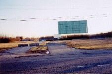
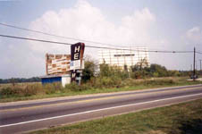
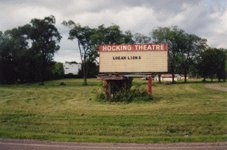
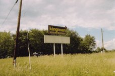
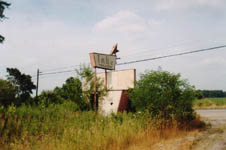
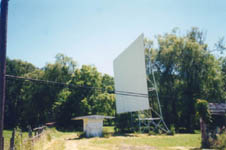
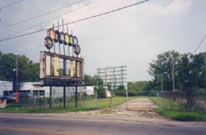
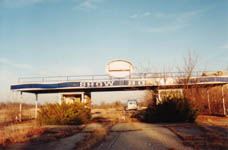
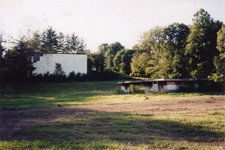
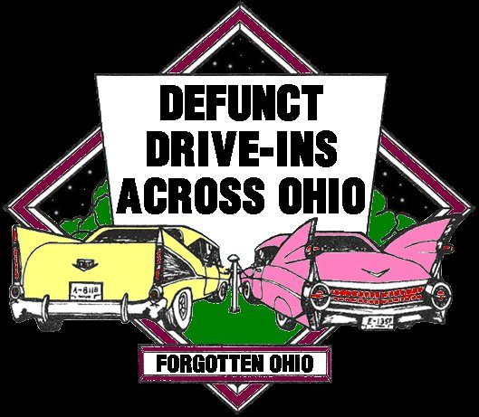

Ohio's Forgotten Drive-In Theaters
For the past couple of decades a lot of attention has been given in the media to the death of the drive-in movie theater as an American institution. Fortunately for all of us, these reports have been largely exaggerated. The decline of the drive-in seems to have plateaued.
It's certainly true that owners and operators of open-air theaters face a unique set of challenges in trying to turn a profit. A drive-in requires a lot of land to run properly--land that drains well, preferably sloping downward toward the screen so people don't block each other's view. It has to be located close enough to a metropolitan area from which to draw customers, but not so close that city lights and traffic interrupt the show. When the suburbs begin to encroach, the local drive-in theater is often the first thing forced to close up shop because the sudden rise in property values make it impractical. And in a state like Ohio, where it gets cold in the winter, a drive-in has to be able to shut down completely for nearly half the year. Many try to defray the loss by hosting flea markets, but many dozens of Ohio ozoners have fallen by the wayside in the face of so many practical obstacles. Some even turned to XXX movies in the late 70s and early 80s in an effort to stay afloat.
They don't always sink, of course; a large number of drive-ins continue to operate throughout the Buckeye State, including classics such as the Lynn Auto Theater in Strasburg (America's second-oldest continuously operating drive-in at seventy-plus years), Springfield's Melody Cruise-In (featuring a gorgeous multicolored neon entrance and marquee), the Elm Road Twin in Warren (concession stand with over sixty items!), and Columbus's South Twin (operating well inside the city limits and consistently packing the house on summer weekends).
I love going to the drive-in movies; it's a sublime experience that has to be felt to be appreciated. As sad as it is that they close down with such frequency, I'm always happy to find a forgotten one rotting away in a vacant lot somewhere, weeds growing up where cars used to park, the screen either full of sagging holes or gone altogether. Here I've assembled my explorations of the less fortunate of Ohio's drive-in movie theaters, as well as a reasonably complete list of darkened screens all across the state. Please e-mail me if you know of any I've forgotten, or if you have memories to share about one of the theaters on my list. I'd love to include your reminiscences on the website.

40 East Twin Drive-In
Columbus - Franklin County
State Route 40
Photographed: Screen, concession stand, speaker poles, box office.
|

|
The Heath Drive-In
Heath - Licking County
State Route 79
Photographed: Screen, concession stand, projection booth, speaker poles, box office, sign/marquee.
|

|
Hocking Theater Drive-In
Logan - Hocking County
State Route 33 at Route 595
Photographed: Screen, concession stand, box office, sign/marquee.
|

|
Kingman Drive-In Theater
Delaware - Delaware County
State Route 23
Photographed: Sign/marquee.
|

|
The Lake Drive-In
Mount Orab - Brown County
State Route 68
Photographed: Box office, marquee, concession stand, speaker poles.
|

|
The Leatherwood Drive-In
Barnesville - Belmont County
Leatherwood Road
Photographed: Screen, ticket booth, concession stand, box office, sign/marquee.
|

|
The Linden Air Drive-In
Columbus - Franklin County
Cleveland Avenue
Photographed: Sign/marquee, screen.
|

|
The Show Boat Drive-In
Springfield - Clark County
State Route 40
Photographed: Box office, concession stand, sign/marquee.
|

|
The Skyline Drive-In
New Lexington - Perry County
Route 13
Photographed: Screen, concession stand, projection booth, box office, driveway lights, sign/marquee.
|

|

Defunct Drive-Ins Across Ohio
Mr. Drive-In - Ohio Drive-Ins Website
Drive-In Theater.com
Drive-In Movie.com
Drive-Ins.com
Jeff Brouws' Abandoned Drive-In Photography
HOME
facebook.com/andy.henderson.319
forgottenohio@yahoo.com